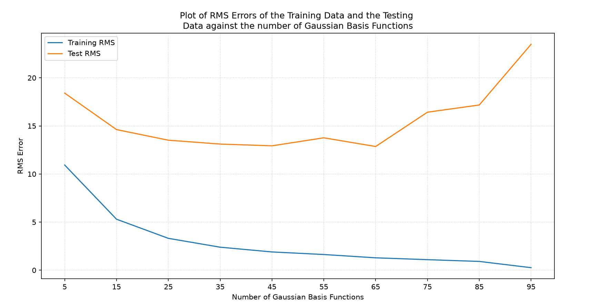
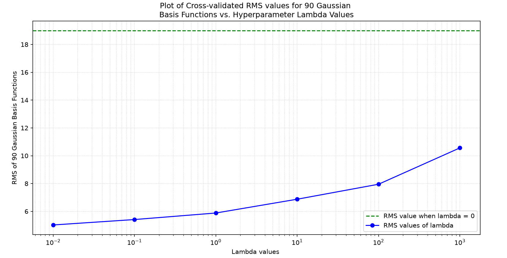

By Irina Khan, October 20, 2026
Overview
This assignment is aimed to implement a linear basis function regression with both polynomial and Gaussian basis. Part 2 focuses on the implementation of a linear regression with gaussian basis functions, using a number of basis functions with different centers, ranging from using 5 functions to 95 functions. The Housing dataset has 506 sets of data points, where each point is made up of 13 different features and contains 1 column of the resulting y-values (aka y_hat) that we want to be able to predict.
Table of Contents
Part e) Plots of Training Error and Test Error Versus 'k' Gaussian Basis Functions
When implementing the gaussian basis function, it was not clear what the value of 'a' should be in the code below:
$$ \phi_k(x, c_k, a) = \exp\left(a \|x - c_k\|_2\right) $$
The python script on the Assignment 2 Part 1 Code page implements the
functions basis_gaussian(), predictions_and_weight(), and RMS calculations for both the predicted y-values for the
batch of training data and for the predicted y-values for the test data.
The basis_gaussian() function takes in the training data set and number of gaussian basis functions to be used (k),
and calculates the Phi function matrix that will be 13 rows and 100 columns.
Note that the additional row that is found with the polynomial basis function is NOT included in the Gaussian basis function
code implementation. The Gaussian basis function does not contain 'bias' terms, it is simply composed of Gaussian functions centered
on a number of center values, defined by 'k'.
The Phi function matrix is formed by solving the Phi functions (aka the 'k' number of Gaussian functions) with the data sets (x1, x2, etc.)
plugged into them.
The pseudo-inverse of the Phi matrix is taken and is multipled with the training datas' corresponding
y values, which represent the corresponding median house values for the row of training data features.
These functions are applied to generate the weights for sets of Gaussian basis functions ranging from sets of 5 to 95, increasing
by increments of 10 functions. The plot below shows how well each set of Gaussian equations is able to predict all of the original training data sets (100 data sets), and
then predict the testing data sets (406 data sets).
The values of each data point from the plot below are shown in the table underneath the graph.

| Number of Gaussian Basis Functions, k | RMS Error of Training Data | RMS Error of Testing Data | Condition number of Training Data Design Matrix, Phi |
|---|---|---|---|
| 5 | 10.93299 | 18.40918 | 18.14 |
| 15 | 5.30032 | 14.61859 | 1845.17 |
| 25 | 3.31169 | 13.51493 | 34605.33 |
| 35 | 2.39226 | 13.11416 | 81119.35 |
| 45 | 1.89772 | 12.93070 | 277891.80 |
| 55 | 1.63106 | 13.76322 | 482658.95 |
| 65 | 1.28822 | 12.85910 | 1768501.59 |
| 75 | 1.09536 | 16.42721 | 4497137.58 |
| 85 | 0.91179 | 17.17503 | 11523738.37 |
| 95 | 0.26282 | 23.48727 | 32823067.61 |
In the graph, the RMS errors of the training data decrease as the number of the gaussian basis
function increases from a set of 5 Gaussian basis functions (where the RMS error was 10.93) to a
set of 95 Gaussian basis functions (where the lowest RMS error achieved is 0.26). Compared to the
4th degree polynomial basis function results from part a) (which had an RMS value of 1.29), it is clear that
the 95 Gaussian basis functions fit the training data better.
improved for fitting to the training data. However, the RMS error of the training data increases for the
fifth-order, sixth-order and seventh-order polynomial to values of 1.63, 1.51 and 3.8 respectively.
This may be because the higher-order polynomial basis functions are overly influenced by the variations of the
features, becoming 'overfitted'.
It is clear that since the training data sets chosen were chosen arbitrarily, (as the first 100 data sets)
the trained polynomial regressions do a poor job at predicting the median house value of the remaining 406 sets
of testing data, because the RMS values increase from 55 functions to 95 functions (with a slight dip when k is 65),
the RMS errors explode in value.
It is expected that with a higher number of Gaussian basis functions, the RMS values should decrease when predicting the testing data.
This discrepeancy can be explained for a few reasons. Firstly, the training data range of data for all of the features is limited, and only covers a subsection of the spread found in various features inside
the testing data. That means the model is trained only for a short range in possible median house values.
Secondly, the condition number of the training design data matrix (phi) is also shown in the table above, and as the number of Gaussian
functions increase, the condition number increases drastically, indicating that the function variables become more linearly dependent
and sensitive to small data disturbances. The lines connecting k = 5 to k = 45 follows a smooth curve, while the data points from k = 55
to k = 95 becomes quite jagged.
Lastly, the large number of Gaussian basis functions could be overfitting the mere 100 training data points, so the weights become too specific
to data points simillar to the training data points, rather than the wide possiblities of test data the model may recieve, and thus the predictions
for median house value from the 13 features of the Boston dataset are quite off.
Part f) Ridge Regression and Cross Validation of 90 Gaussian Basis Functions
A plot of average validation set error versus the regularizing constant lambda is shown below, along with a table of all of the average RMS values per selected lambda value.

| Lambda | Average Validation RMS Value |
|---|---|
| 0 | 18.98867 |
| 0.01 | 5.02267 |
| 0.1 | 5.41241 |
| 1 | 5.88186 |
| 10 | 6.87412 |
| 100 | 7.95117 |
| 1000 | 10.56363 |
As seen in the graph and the table above, the lambda value that minimizes the average cross-validated RMS value the most
(from the 7 possible values of lambda) is when lambda is equal to 0.01. Therefore, I would pick 0.01 as the regularization parameter for the
cross-validation testing of this set of 90 gaussian basis functions.
Note that each of the 90 training datasets used in the cross-validation are all selected as centers for the 90 Gaussian basis functions.
Since it was established in part e) that the higher number of basis functions could result in an ill-conditioned matrix.
Without the hyperparameter, the RMS sits at roughly 18.99, but with a little bit of penalty for widely varying weights (since each feature
has drastically different units and was not normalized in this assignment), by choosing
a lambda value of 0.01, the model reduces the weights closer to zero, while still being able to spot the patterns in the data.
For values of lambda above 0.01, the 'penalty' for widely varying weights becomes too severe, causing in a model that grows more generic,
and thus results in large average RMS values.